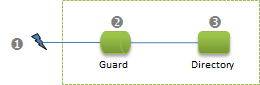

Overview
Introduction
The org.restlet.security package contains classes related to security. As there are numerous protocols (like HTTP, SMTP, etc.) that we want to support and as each one has various ways to authenticate requests (HTTP Basic, HTTP Digest, SMTP Plain, etc.), the Restlet API provides a flexible mechanism to support them all in a unified way.
In this section, we will start off with an example explaing how to guard sensitive resources and then describe with more details the security API, the engine support and available extensions.
Tutorial
When you need to secure the access to some Restlets, several options are available. A common way is to rely on cookies to identify clients (or client sessions) and to check a given user ID or session ID against your application state to determine if access should be granted. Restlets natively support cookies via the Cookie and CookieSetting objects accessible from a Request or a Response.
There is another way based on the standard HTTP authentication mechanism. By default, the Restlet Engine accepts credentials sent and received in the Basic HTTP and Amazon Web Services schemes.
When receiving a call, developers can use the parsed credentials available in Request.challengeResponse.identifier/secret via the ChallengeAuthenticator filter. Filters are specialized Restlets that can pre-process a call before invoking and attached Restlet or post-process a call after the attached Restlet returns it. If you are familiar with the Servlet API, the concept is similar to the Filter interface. See below how we would modify the previous example to secure the access to the Directory:
@Override
public Restlet createInboundRoot() {
// Create a simple password verifier
MapVerifier verifier = new MapVerifier();
verifier.getLocalSecrets().put("scott", "tiger".toCharArray());
// Create a guard
ChallengeAuthenticator guard = new ChallengeAuthenticator(
getContext(), ChallengeScheme.HTTP_BASIC, "Tutorial");
guard.setVerifier(verifier);
// Create a Directory able to return a deep hierarchy of files
Directory directory = new Directory(getContext(), ROOT_URI);
directory.setListingAllowed(true);
guard.setNext(directory);
return guard;
}
Note that the authentication and authorization decisions are clearly considered as distinct concerns and are fully customizable via dedicated filters that inherit from the Authenticator (such as ChallengeAuthenticator) and the Authorizer abstract classes. Here we simply hard-coded a single user and password couple. In order to test, let’s use the client-side Restlet API:
public static void main(String[] args) {
// Prepare the request
ClientResource resource = new ClientResource("http://localhost:8182/");
// Add the client authentication to the call
ChallengeScheme scheme = ChallengeScheme.HTTP_BASIC;
ChallengeResponse authentication = new ChallengeResponse(scheme, "scott", "tiger");
resource.setChallengeResponse(authentication);
try {
// Send the HTTP GET request
resource.get();
// Output the response entity on the JVM console
resource.getResponseEntity().write(System.out);
} catch (Exception e) {
if (resource.getStatus().equals(Status.CLIENT_ERROR_UNAUTHORIZED)) {
// Unauthorized access
System.out
.println("Access unauthorized by the server, check your credentials");
} else {
// Unexpected status
System.out.println("An unexpected status was returned: "
+ resource.getStatus());
}
}
}You can change the user ID or password sent by this test client in order to check the response returned by the server. Remember to launch the previous Restlet server before starting your client. Note that if you test your server from a different machine, you need to replace “localhost” by either the IP address of your server or its domain name when typing the URI in the browser. The server won’t need any adjustment due to the usage of a VirtualHost which accepts all types of URIs by default.
Restlet API
The Restlet API in version 2.4 has fully refactored its security model. It is based on some properties of the ClientInfo class: user and roles. This model relies on Java security principals in a way similar to JAAS. But Restlet security API and JAAS are distinct, and some bridges are required if you want to use JAAS (see the org.restlet.ext.jaas extension).
The security model distinguishes the authentication and authorization aspects.
The authentication steps relies on a dedicated filter which is a subclass of Authenticator (e.g. ChallengeAuthenticator, or your own) which verifies the credentials stored in the request (challengeResponse attribute) thanks to a Verifier (e.g. a SecretVerifier), Then, the Enroler (if any) is called in order to set the list of roles of the user.
Once the credentials have been authenticated and the User and Roles have been set by the Authenticator/Verifier/Enroler, then the request is ready to be routed to the right resource.
If the request is not authenticated, a “Unauthorized (401)” response is sent back, by default.
According to your policy, some parts of the hierarchy of resource are only authorized to some kinds of people. This is the role of the Authorizer filter. In the sample code attached to this page, we’ve implemented a RoleAuthorizer filter that checks a set of authorized roles. You will see that the URIs hierarchy is split in two parts, each of them is protected by its own instance of RoleAuthorizer.
If a request is not authorized, a “Forbidden (403)” response is sent back, by default.
Of course, you can customize each part: Authenticator, Verifier, Enroler, Authorizer.
Regarding the Authenticator helper, this piece of code is used to handle the conversion of header values (of the protocol, e.g. HTTP) with the Restlet API model (Request/Response) in one direction, or both for a certain type of Authentication challenge scheme. At this time, the following schemes are supported:
- HTTP_BASIC (client and server) with the core module
- HTTP_DIGEST (client and server) with the crypto extension
- Amazon S3, shared_key and shared_key_lite (client) with the crypto extension
- SMTP (client) with the core module
ChallengeRequest
Contains information about the authentication challenge that is sent by an origin server to a client.
For server-side Restlet applications, this object will typically be created and set on the current Response by a Guard added to the request processing chain. Then, when the response goes back to the Restlet engine, the server connector and the matching authentication helper will format it into the proper protocol artifact such as a “WWW-Authenticate” header in HTTP.
For client-side Restlet applications, this object will typically be received in response to a request to a target resource requiring authentication. In HTTP, this is signaled by a 401 (Unauthorized) status. This means that a new request must be sent to the server with a valid challenge response set for the required challenge scheme. The client connector and matching AuthenticationHelper are responsible for parsing the protocol artifact such as the “WWW-Authenticate” header in HTTP.
ChallengeResponse
Contains information about the authentication challenge response sent by a client to an origin server.
For server-side Restlet applications, this object will typically be created by the server connector with the help from the matching AuthenticationHelper for parsing.
For client-side Restlet applications, this object must be manually created before invoking the context’s client dispatcher for example.
ChallengeScheme
Indicates the challenge scheme used to authenticate remote clients. This only identifies the scheme used or to be used but doesn’t contain the actual logic needed to handle the scheme. This is the role of the AuthenticatorHelper subclasses.
Restlet Engine
Most of the logic related to authentication is located in the package “org.restlet.security”.
AuthenticatorUtils
Static utilities methods to parse HTTP headers, find the matching authentication helper and misc methods.
AuthenticatorHelper
Base class for authentication helpers. There are also subclasses for the schemes internally supported by the engine or via extensions :
- HTTP Basic
- SMTP Plain
Extensions
In addition to the internal authentication helpers, additional schemes can be supported using pluggable extensions. Currently, there is an org.restlet.ext.crypto extension available for:
- HTTP Digest
- HTTP Amazon S3 (client)
- HTTP Azure SharedKey
Confidentiality
SSL is typically used to ensure that requests and responses are exchanged confidentially between clients and a server. Configuring SSL requires the setting of several parameters on the HTTPS server connector instance used. You need to provide a key store containing the certificate for your server instance. See connectors’ documentation for more configuration details.
Note that SSL configuration is closely associated with an IP address and a listening port. This may cause issue with the usage of virtual hosting where several domains and applications share the same IP adress and listening port. It is not possible to associate a SSL certificate per virtual host because in order to determine a virtual host, we need to have read and parsed the HTTP request headers to get the “Host” header. You can only do that if you already use the certificate to read the incoming SSL stream.
In this case, the only solution is to have two listening server sockets (hence two IP addresses if you want to use the default HTTPS 443 port) and then two Restlet server connectors configured, each one pointing to a specific certificate. With some additional work, it is possible to use the same key store to provide both certificate. This requires usage of alias names and custom SSL context factories.
In addition to the parameters that are similar but specific to each type of HTTPS server connector, it is possible to configure the SSL connectors using an SslContextFactory, in a way that is common to all three types of HTTPS server connectors (Simple, Jetty and Grizzly). Configuring SSL is done in this order:
- An instance of SslContextFactory can be passed in the
sslContextFactoryattribute of the connector’s context. This can be useful for cases that requires such an instance to be customized. - When no
sslContextFactoryattribute is set, the full name of a concrete class extending SslContextFactory can be passed in thesslContextFactoryparameter of the connector’s context. Such a class musthave a default constructor. The context’s parameters are passed to itsinitmethod, so as to initialize the SslContextFactory instance via text parameters.
The org.restlet.engine.ssl.DefaultSslContextFactory is an SslContextFactory that supports a basic set of parameters, and will default to the values specified in thejavax.net.ssl.*system properties (see JSSE Reference guide).
There can in fact be several values of sslContextFactory (since there can be several values for parameters), in which case the first one constructed and initialized successfully will be used. - If no
sslContextFactoryattribute or parameter is set, the configuration will fall back to the parameters that are specific to each type of connector.
SSL client authentication is not configured as part of the SSL context, although the trust store and which peer certificates to trust are.
Authentication
In Restlet, authentication and authorization are handled very differently than in the Servlet world. Here you have full control of the process, no external XML descriptor is necessary.
The default approach is to use the org.restlet.Guard class (a Restlet filter) or a subclass of it. By default, this class uses a map to store the login/password couples but this can be customized by overriding the “authenticate(Request)” method.
From an org.restlet.data.Request, the login/password can be retrieved using these methods:
- Request.getChallengeResponse().getIdentifier() : String // LOGIN\
- Request.getChallengeResponse().getSecret() : String //PASSWORD
The HTTP server connectors currently only support HTTP BASIC authentication (the most widely used).
SSL client authentication
To enable client-side SSL authentication on an HTTPS server connector,
set the wantClientAuthentication or needClientAuthentication
parameters to true (in the first case, presenting a client certificate
will be optional). The chain of client certificate is then accessible as
List of X509Certificates in the org.restlet.https.clientCertificates
Request attribute.
Coarsed grained authorization
For the authorizations that are common to a set of resources, a Guard subclass can also be used by overriding the “authorize(Request)” method. Note that this method accepts all authenticated requests by default. You can plugin in your own mechanism here, like an access to a LDAP repository.
Fine grained authorization
If the permissions are very fine grained, the authorizations should probably handled at the resource level directly instead of the Guard filter level (unless you want to put a filter in front of each resource). With the approach, you can make your permission depend on the value of the target resource on the resource and specific method invoked, etc.
Potential vulnerabilities
There are many ways of securing REST style applications; most of the common and easily usable ones involve a set of credentials that the user agent automatically presents on behalf of the user each time it makes any request. HTTP Basic and Digest Authentication, cookies, and even SSL certificate authentication all work this way; once the user agent (browser) has obtained the credentials, it sends the credentials every time it asks the server to perform an operation.
However, this convenience comes at a price: a class of vulnerabilities known as “XSRF” – cross site request forgery. If a malicious site (http://badsite) embeds a GET reference to a URI on a target site, for example, by simply adding an <img src=‘http://targetsite/delete/targetaccount"/>, when user agents visit http://badsite, if they are already authenticated to http://targetsite, the GET request will be performed with authentication, and will succeed.
With a little more work, and the availability of Javascript on the malicious site, this attack can be easily extended to perform POST operations as well. Other HTTP verbs (e.g. PUT and DELETE) are difficult to exploit via XSRF, as this requires access to XmlHttpRequest or analogous components that are generally written to adhere to same-source rules. Still, it would be unwise to utterly discount the possibility.
Some good practices for defending against XSRF include:
Do not ever allow GET operations to have side effects (like transferring money to an attacker’s bank account…) GET should expose the state of a resource, not send a command.
POST is for sending commands that have side effects. To trivially protect these, require some additional form of authentication inside the entity of a POST operation. For example, if the client is authenticated by a cookie, require that the client restate the cookie inside the entity of the POST. This will be difficult for an XSRF attacker to know how to forge.
For the most resistance, the server can present the client with an application level authorization token, an opaque value that the server can verify belongs to the right authenticated user.
- Such a token should be be difficult for a third party to calculate, e.g. a server-salted MD5 or SHA1 hash of the user’s identification credential.
- To defeat XSRF, this application-level token needs to be transmitted by means that the user-agent does notautomatically return with each request. For example, it can be sent in the HTML of a form as a hidden field, and returned via POST in the encoded form entity.
Because Restlet supports flexible URI patterns, you can embed an application-level token in your URIs in many ways (e.g. /admin/{token}/delete/youraccount). This provides an effective, if circuitous, means of protecting PUT, DELETE and other verbs from unlikely XSRF attacks. It also may help to avoid certain brute force or denial of service attacks against well-known URI targets.
If cookies are being used as a primary or supplemental credential, protect them against XSS by setting the accessRestricted property in CookieSetting; this stops the cookies from being used by script in all modern browsers.
Sample code
Security sample (application/zip, 2.9 kB)